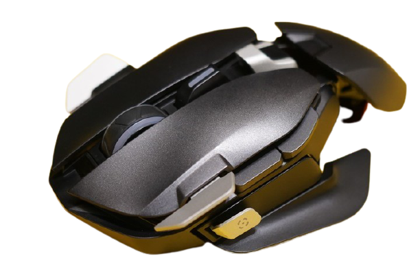
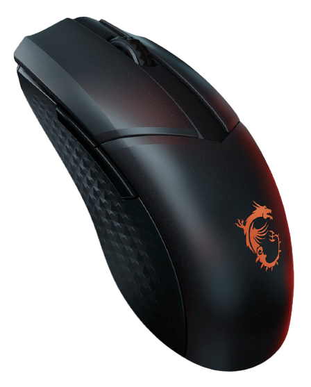
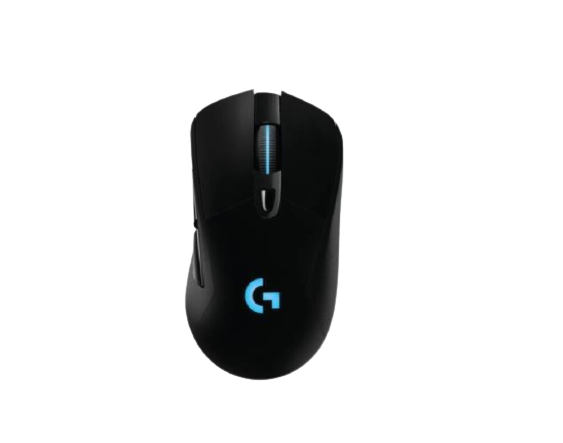

COUGAR-美洲獅-DUALBLADER-旗艦級模組化電競滑鼠
$2,010
VIEW
• 革命性的 DYNASTRUT 專利升降技術 (可切換抓握/趴握兩種模式)
• 提供兩組可互換的側翼（大/小）、四個可拆卸金屬撥片和兩種尺寸的手托
• 12個可編程按鈕
• 搭載16000DPI高階光學感應器
• 左右鍵高達6千萬次機械點擊壽命
• 採用獨特的ULTRAFLX超軟材質纜線
• COUGAR UIX™ 系統
$2,010

MSI-Clutch-GM41-LIGHTWEIGHT-超輕量無線電競滑鼠
$1,000
VIEW
• 滑鼠總重74克
• PIXART PAW3370光學感測器
• 高達20000 DPI靈敏度/ 50G加速度/ 400 IPS追蹤
• 可耐6,000萬次點擊的歐姆龍(OMRON)微動開關
• 10分鐘充電即可達9小時電池續航力
• 符合左/右手模式設計
• 含充電底座、USB無線2.4G加密接收器和FRIXION FREE 微磨感線材
• Dragon Center software可支援包含RGB燈光等客製化設定
$1,000
• 有線/無線雙模連接
• 19,000 dpi 光學感測器，有線與 2.4 GHz 連接模式皆能達到 1000 Hz 的輪詢率
• ROG 微動開關提供穩定的點擊阻力以及 7000 萬次點擊壽命
• 無線連接並關閉 RGB 燈效時，續航力高達 67 小時
$1,600

羅技-G703-無線電競滑鼠
$1,050
VIEW
• LIGHTSPEED Wireless
- LIGHTSPEED技術使無線滑鼠的速度比有線的滑鼠更快
• HERO 16K Sensor
- 超過400 IPS的速度精準追蹤
- 蓄電力較前代省10倍、使用更輕的電池，電力續航可達：60hr(關閉RGB) / 35hr(開啟RGB)
• POWERPLAYCompatible
- 搭配POWERPLAY無線充電滑鼠墊，遊戲時同步充電
• LIGHTSYNC RGB
- 通過遊戲、音頻、螢幕驅動，提供最具沉浸感的RGB體驗，與其他Logitech G設備同步背光效果
$1,050